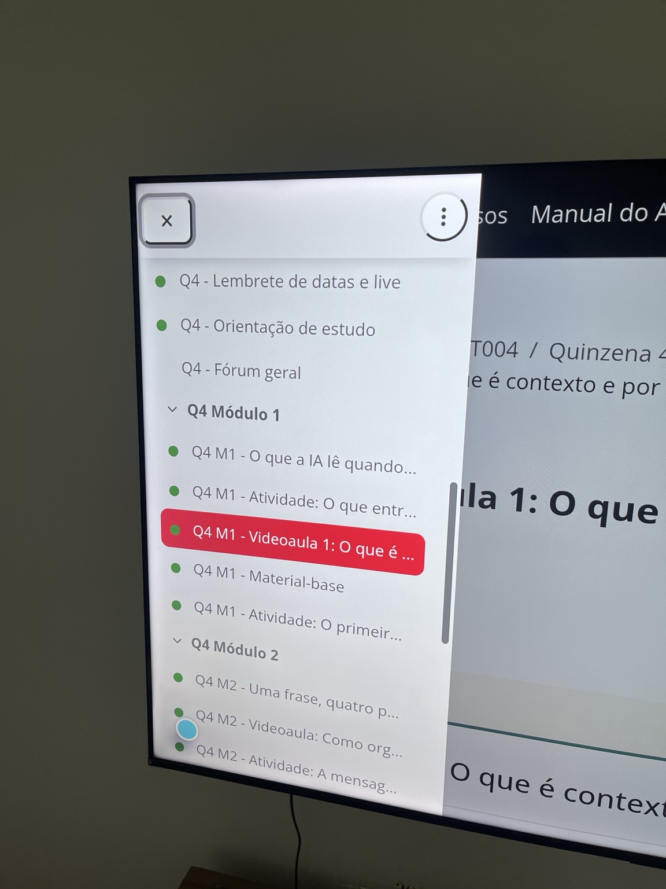

use as setas para mover o cursor com precisão e pressione ok para clicar em links, botões e vídeos.
feito para android tv e google tv
suas aulas na tela grande.
um aplicativo não oficial para acessar o ava pela tv e estudar como quem maratona uma série.
dois modos de controle
escolha o modo na primeira abertura. para trocar depois, segure o botão ok.
use as setas do controle para passar pelos links, botões e campos da página sem exibir a bolinha.

como instalar
o aplicativo não depende do adb para funcionar.
abra esta página na tv ou envie o apk para ela.
permita a instalação de aplicativos desconhecidos.
abra o arquivo e selecione instalar.
- cursor mais preciso e com movimentos menores
- botão voltar integrado ao histórico do ava
- suporte a vídeos e tela cheia